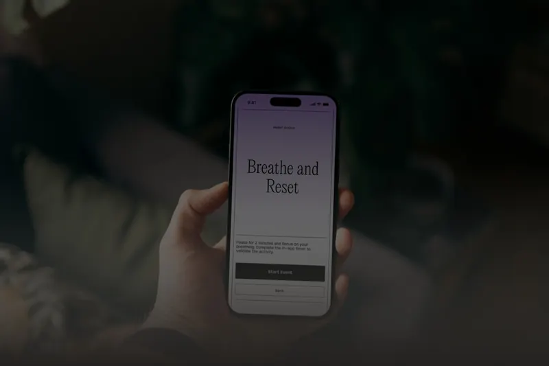
The State of Doing
Foi-nos pedido que desenvolvêssemos um projeto de comunicação baseado no tema “Trabalho”, explorando as suas múltiplas dimensões e materializando-o numa proposta que expressasse uma posição clara através de escolhas conceptuais, formais e comunicacionais.
- Especialidades
- Direção de arte, branding e estratégia de marca, tipografia e design tipográfico, UI/UX design
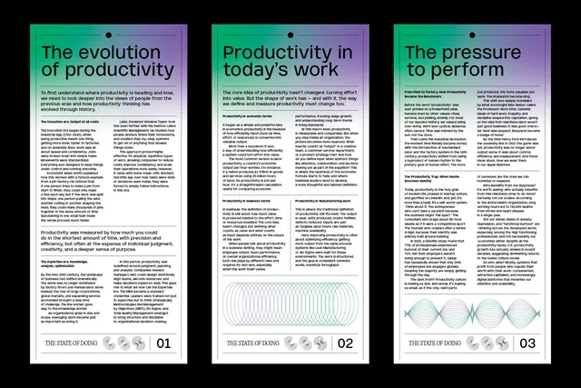
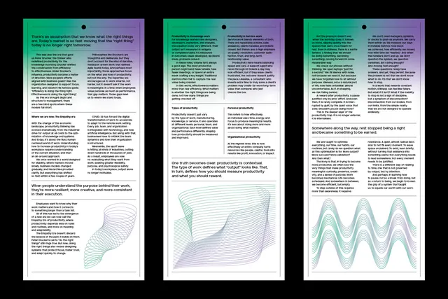
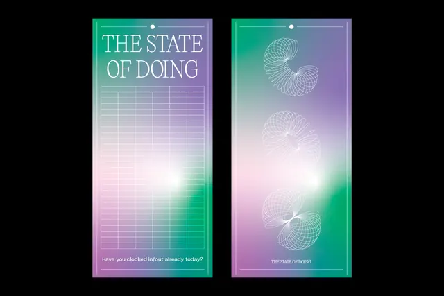
Sobre o projeto
Vivemos numa sociedade que mede o valor das pessoas pela sua produtividade. A pressão constante para produzir mais, mais rápido e melhor contribui para o excesso de trabalho e para o esgotamento. Este projeto propõe uma reflexão sobre como encontrar valor para além daquilo que produzimos.
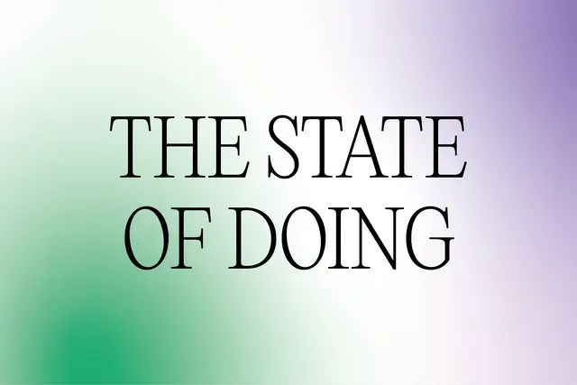
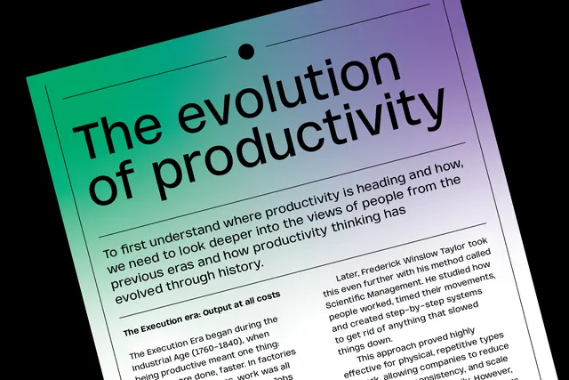
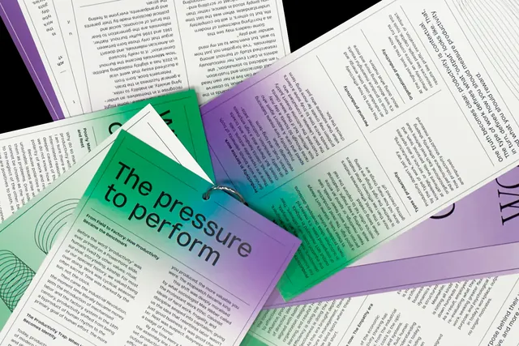
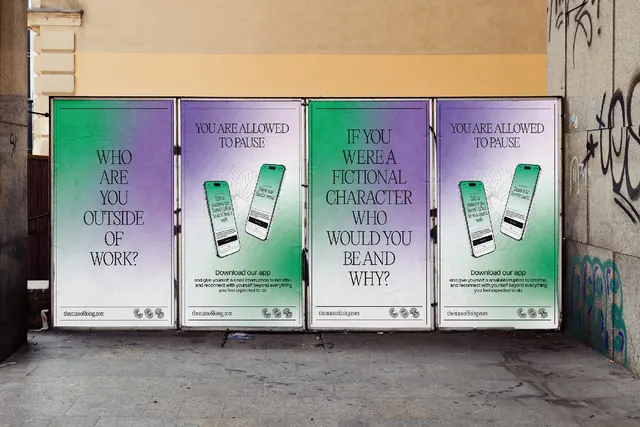
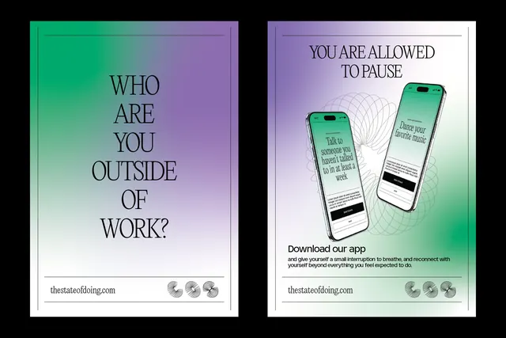
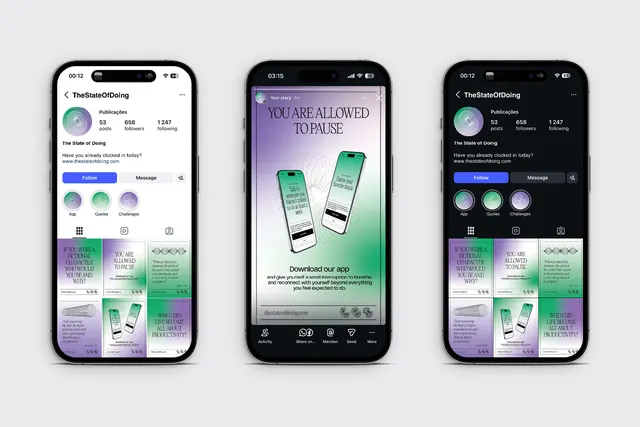
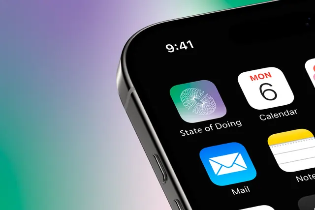
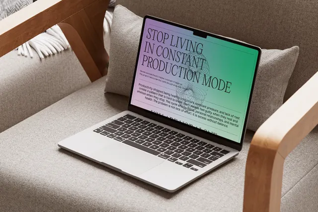
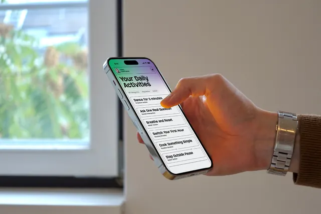
Projeto seguinte
01 / 05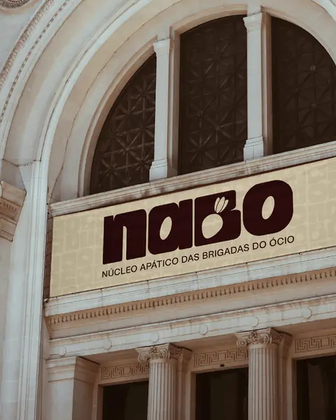
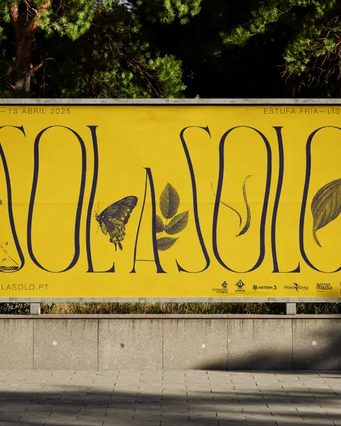
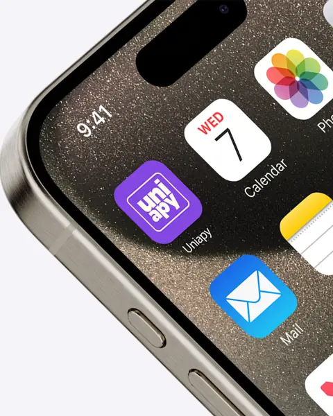
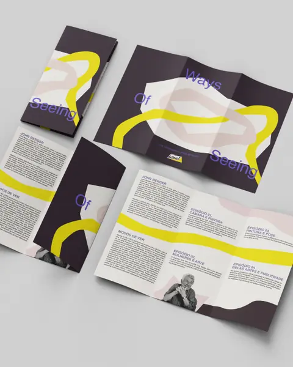
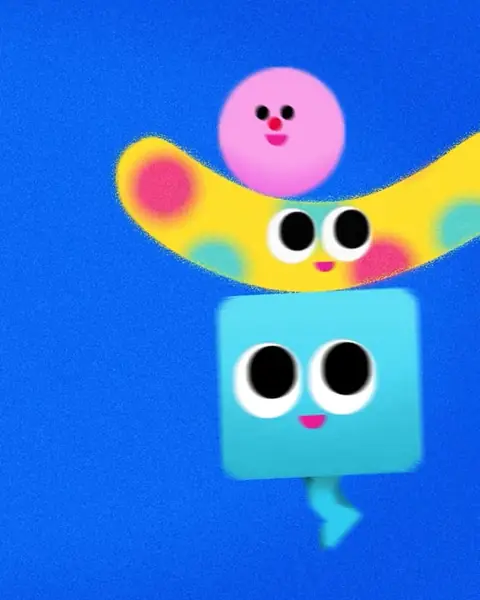